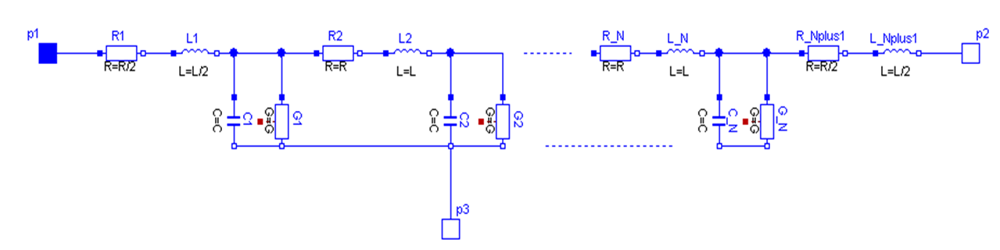
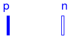
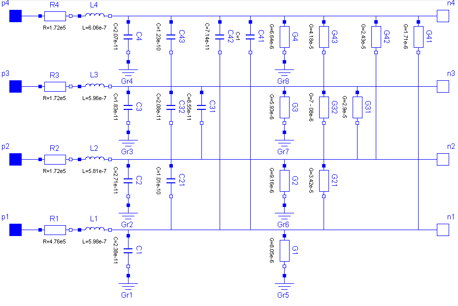
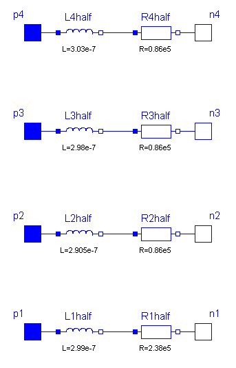
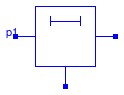
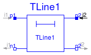
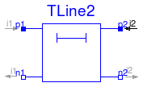
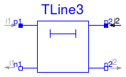

This package contains lossy and lossless segmented transmission lines, and LC distributed line models. The line models do not yet possess a conditional heating port.
Extends from Modelica.Icons.Library (Icon for library).
| Name | Description |
|---|---|
| Lossy Transmission Line | |
| multiple OLine | |
| ULine | Lossy RC Line |
| Lossless transmission line with characteristic impedance Z0 and transmission delay TD | |
| Lossless transmission line with characteristic impedance Z0, frequency F and normalized length NL | |
| Lossless transmission line with characteristic impedance Z0 and frequency F |

Lossy Transmission Line. As can be seen in the picture below, the lossy transmission line OLine consists of segments of lumped resistances and inductances in series and conductances and capacitances that are connected with the reference pin p3. The precision of the model depends on the number N of lumped segments.
To get a symmetric line model, the first resistor and inductor are cut into two parts (R1 and R_Nplus1, L1 and L_Nplus1)
The values of the capacitances are calculated with: C=c*length/N with c given by the user, "lenght=length of line" and "N=number of segments".
| Type | Name | Default | Description |
|---|---|---|---|
| Real | r | Resistance per meter [Ohm/m] | |
| Real | l | Inductance per meter [H/m] | |
| Real | g | Conductance per meter [S/m] | |
| Real | c | Capacitance per meter [F/m] | |
| Length | length | Length of line [m] | |
| Integer | N | Number of lumped segments |
| Type | Name | Description |
|---|---|---|
| Pin | p1 | |
| Pin | p2 | |
| Pin | p3 |
model OLine "Lossy Transmission Line"
//extends Interfaces.ThreePol;
Interfaces.Pin p1;
Interfaces.Pin p2;
Interfaces.Pin p3;
SI.Voltage v13;
SI.Voltage v23;
SI.Current i1;
SI.Current i2;
parameter Real r(
final min=Modelica.Constants.small,
unit="Ohm/m", start=1) "Resistance per meter";
parameter Real l(
final min=Modelica.Constants.small,
unit="H/m", start=1) "Inductance per meter";
parameter Real g(
final min=Modelica.Constants.small,
unit="S/m", start=1) "Conductance per meter";
parameter Real c(
final min=Modelica.Constants.small,
unit="F/m", start=1) "Capacitance per meter";
parameter SI.Length length(final min=Modelica.Constants.small, start=1)
"Length of line";
parameter Integer N(final min=1, start=1) "Number of lumped segments";
protected
Basic.Resistor R[N + 1](R=fill(r*length/(N + 1), N + 1));
Basic.Inductor L[N + 1](L=fill(l*length/(N + 1), N + 1));
Basic.Capacitor C[N](C=fill(c*length/(N), N));
Basic.Conductor G[N](G=fill(g*length/(N), N));
equation
v13 = p1.v - p3.v;
v23 = p2.v - p3.v;
i1 = p1.i;
i2 = p2.i;
connect(p1, R[1].p);
for i in 1:N loop
connect(R[i].n, L[i].p);
connect(L[i].n, C[i].p);
connect(L[i].n, G[i].p);
connect(C[i].n, p3);
connect(G[i].n, p3);
connect(L[i].n, R[i + 1].p);
end for;
connect(R[N + 1].n, L[N + 1].p);
connect(L[N + 1].n, p2);
end OLine;
 Modelica.Electrical.Analog.Lines.M_OLine
Modelica.Electrical.Analog.Lines.M_OLine
The M_OLine is a multi line model which consists of several segements and several single lines.
Each segement consists of resistors and inductors that are connected in series in each single line, and of capacitors and conductors both between the lines and to the ground. The inductors are coupled to each other like in the M_Inductor model. The following picture shows the schematic of a segment with four single lines (lines=4):


Filling the matrixes of the inductances, capacitances and conductances is a bit more complicated, because
those components occur also between two lines and not only (like the resistor) in one line. The entries of
the matrices are given by the user in form of a vector. The vector length dim_vector_lgc is calculated by dim_vector_lgc = lines*(lines+1)/2. Inside the model a symmetric inductance matrix, a symmetric capacitance matrix and
a symmetric conductance matrix are build out of the entries of the vectors given by the user. The way of building
is the same for each matrix, so the approach for filling one of the matrices will be shown at an example:
The number of lines is assumed to be four. To build the matrix, the model needs the values from the main diagonal and from
the positions that are below the main diagonal. To get the following matrix
| 1 | 0.1 | 0.2 | 0.4 | ||
| Matrix | = | 0.1 | 2 | 0.3 | 0.5 |
| 0.2 | 0.3 | 3 | 0.6 | ||
| 0.4 | 0.5 | 0.6 | 4 |
For the example of a microelectronic line of 0.1m lenght, which is used as default example for the M_OLine model, a sensible inductance-matrix would be
| 5.98e-7 | 4.44e-7 | 4.39e-7 | 3.99e-7 | ||
| L | = | 4.44e-7 | 5.81e-7 | 4.09e-7 | 4.23e-7 |
| 4.39e-7 | 4.09e-7 | 5.96e-7 | 4.71e-7 | ||
| 3.99e-7 | 4.23e-7 | 4.71e-7 | 6.06e-7 |
For the example of a microelectronic line of 0.1m lenght, which is used as default example for the M_OLine model, a sensible capacitance-matrix would be
| 2.38e-11 | 1.01e-10 | 8.56e-11 | 5.09e-12 | ||
| C | = | 1.01e-10 | 2.71e-11 | 2.09e-11 | 7.16e-11 |
| 8.56e-11 | 2.09e-11 | 1.83e-11 | 1.23e-10 | ||
| 5.09e-12 | 7.16e-11 | 1.23e-10 | 2.07e-11 |
For the example of a microelectronic line of 0.1m lenght, which is used as default example for the M_OLine model, a sensible conductance-matrix would be
| 8.05e-6 | 3.42e-5 | 2.91e-5 | 1.76e-5 | ||
| G | = | 3.42e-5 | 9.16e-6 | 5.93e-6 | 6.64e-6 |
| 2.90e-5 | 7.08e-6 | 5.93e-6 | 4.19e-5 | ||
| 1.71e-6 | 2.43e-5 | 4.18e-5 | 6.64e-6 |
| Type | Name | Default | Description |
|---|---|---|---|
| Length | length | 0.1 | Length of line [m] |
| Integer | N | 5 | Number of lumped segments |
| Integer | lines | 4 | Number of lines |
| Real | r[lines] | {4.76e5,1.72e5,1.72e5,1.72e5} | Resistance per meter [Ohm/m] |
| Real | l[dim_vector_lgc] | {5.98e-7,4.44e-7,4.39e-7,3.9... | Inductance per meter [H/m] |
| Real | g[dim_vector_lgc] | {8.05e-6,3.42e-5,2 - 91e-5,1... | Conductance per meter [S/m] |
| Real | c[dim_vector_lgc] | {2.38e-11,1.01e-10,8.56e-11,... | Capacitance per meter [F/m] |
| Type | Name | Description |
|---|---|---|
| PositivePin | p[lines] | Positive pin |
| NegativePin | n[lines] | Negative pin |
model M_OLine "multiple OLine"
parameter Modelica.SIunits.Length length(final min=Modelica.Constants.small) = 0.1
"Length of line";
parameter Integer N(final min=1) = 5 "Number of lumped segments";
parameter Integer lines(final min=2) = 4 "Number of lines";
protected
parameter Integer dim_vector_lgc=div(lines*(lines+1),2);
public
parameter Real r[lines](
final min=Modelica.Constants.small,
unit="Ohm/m") = {4.76e5,1.72e5,1.72e5,1.72e5} "Resistance per meter";
parameter Real l[dim_vector_lgc](
final min=Modelica.Constants.small,
unit="H/m") = {5.98e-7,4.44e-7,4.39e-7,3.99e-7,5.81e-7,4.09e-7,4.23e-7,5.96e-7,4.71e-7,
6.06e-7} "Inductance per meter";
parameter Real g[dim_vector_lgc](
final min=Modelica.Constants.small,
unit="S/m") = {8.05e-6,3.42e-5,2 - 91e-5,1.76e-6,9.16e-6,7.12e-6,2.43e-5,5.93e-6,
4.19e-5,6.64e-6} "Conductance per meter";
parameter Real c[dim_vector_lgc](
final min=Modelica.Constants.small,
unit="F/m") = {2.38e-11,1.01e-10,8.56e-11,5.09e-12,2.71e-11,2.09e-11,7.16e-11,1.83e-11,
1.23e-10,2.07e-11} "Capacitance per meter";
model segment
parameter Integer lines(final min=1)=3; //number of lines
parameter Integer dim_vector_lgc=div(lines*(lines+1),2);
Modelica.Electrical.Analog.Interfaces.PositivePin p[lines] "Positive pin";
Modelica.Electrical.Analog.Interfaces.NegativePin n[lines] "Negative pin";
parameter Real Cl[dim_vector_lgc]=fill(1,dim_vector_lgc);
parameter Real Rl[lines]=fill(7,lines);
parameter Real Ll[dim_vector_lgc]=fill(2,dim_vector_lgc);
parameter Real Gl[dim_vector_lgc]= fill(1,dim_vector_lgc);
Modelica.Electrical.Analog.Basic.Capacitor C[dim_vector_lgc](C=Cl);
Modelica.Electrical.Analog.Basic.Resistor R[lines](R=Rl);
Modelica.Electrical.Analog.Basic.Conductor G[dim_vector_lgc](G=Gl);
Modelica.Electrical.Analog.Basic.M_Transformer inductance(N=lines, L=Ll);
Modelica.Electrical.Analog.Basic.Ground M;
equation
for j in 1:lines-1 loop
connect(R[j].p,p[j]);
connect(R[j].n,inductance.p[j]);
connect(inductance.n[j],n[j]);
connect(inductance.n[j],C[((1+(j-1)*lines)-((j-2)*(j-1))*0.5)].p);
connect(C[((1+(j-1)*lines)-((j-2)*(j-1))*0.5)].n,M.p);
connect(inductance.n[j],G[((1+(j-1)*lines)-((j-2)*(j-1))*0.5)].p);
connect(G[((1+(j-1)*lines)-((j-2)*(j-1))*0.5)].n,M.p);
for i in j+1:lines loop
connect(inductance.n[j],C[((1+(j-1)*lines)-((j-2)*(j-1))*0.5)+1+i-(j+1)].p);
connect(C[((1+(j-1)*lines)-((j-2)*(j-1))*0.5)+1+i-(j+1)].n,inductance.n[i]);
connect(inductance.n[j],G[((1+(j-1)*lines)-((j-2)*(j-1))*0.5)+1+i-(j+1)].p);
connect(G[((1+(j-1)*lines)-((j-2)*(j-1))*0.5)+1+i-(j+1)].n,inductance.n[i]);
end for;
end for;
connect(R[lines].p,p[lines]);
connect(R[lines].n,inductance.p[lines]);
connect(inductance.n[lines],n[lines]);
connect(inductance.n[lines],C[dim_vector_lgc].p);
connect(C[dim_vector_lgc].n,M.p);
connect(inductance.n[lines],G[dim_vector_lgc].p);
connect(G[dim_vector_lgc].n,M.p);
end segment;
model segment_last
Modelica.Electrical.Analog.Interfaces.PositivePin p[lines] "Positive pin";
Modelica.Electrical.Analog.Interfaces.NegativePin n[lines] "Negative pin";
parameter Integer lines(final min=1)=3;
parameter Integer dim_vector_lgc= div(lines*(lines+1),2);
parameter Real Rl[lines]=fill(1,lines);
parameter Real Ll[dim_vector_lgc]=fill(1,dim_vector_lgc);
Modelica.Electrical.Analog.Basic.Resistor R[lines](R=Rl);
Modelica.Electrical.Analog.Basic.M_Transformer inductance( N=lines, L=Ll);
Modelica.Electrical.Analog.Basic.Ground M;
equation
for j in 1:lines-1 loop
connect(p[j],inductance.p[j]);
connect(inductance.n[j],R[j].p);
connect(R[j].n,n[j]);
end for;
connect(p[lines],inductance.p[lines]);
connect(inductance.n[lines],R[lines].p);
connect(R[lines].n,n[lines]);
end segment_last;
segment s[N - 1](
lines=fill(lines, N - 1),
dim_vector_lgc=fill(dim_vector_lgc, N - 1),
Rl=fill(r*length/N, N - 1),
Ll=fill(l*length/N, N - 1),
Cl=fill(c*length/N, N - 1),
Gl=fill(g*length/N, N - 1));
segment s_first(
lines=lines,
dim_vector_lgc=dim_vector_lgc,
Rl=r*length/(2*N),
Cl=c*length/(N),
Ll=l*length/(2*N),
Gl=g*length/(N));
segment_last s_last(
lines=lines,
Rl=r*length/(2*N),
Ll=l*length/(2*N));
Modelica.Electrical.Analog.Interfaces.PositivePin p[lines] "Positive pin";
Modelica.Electrical.Analog.Interfaces.NegativePin n[lines] "Negative pin";
equation
connect(p,s_first.p);
connect(s_first.n,s[1].p);
for i in 1:N-2 loop
connect(s[i].n,s[i+1].p);
end for;
connect(s[N-1].n,s_last.p);
connect(s_last.n,n);
end M_OLine;
 Modelica.Electrical.Analog.Lines.ULine
Modelica.Electrical.Analog.Lines.ULine
As can be seen in the picture below, the lossy RC line ULine consists of segments of
lumped series resistances and capacitances that are
connected with the reference pin p3.
The precision
of the model depends on the number N of
lumped segments.

References
| Type | Name | Default | Description |
|---|---|---|---|
| Real | r | Resistance per meter [Ohm/m] | |
| Real | c | Capacitance per meter [F/m] | |
| Length | length | Length of line [m] | |
| Integer | N | Number of lumped segments |
| Type | Name | Description |
|---|---|---|
| Pin | p1 | |
| Pin | p2 | |
| Pin | p3 |
model ULine "Lossy RC Line"
//extends Interfaces.ThreePol;
Interfaces.Pin p1;
Interfaces.Pin p2;
Interfaces.Pin p3;
SI.Voltage v13;
SI.Voltage v23;
SI.Current i1;
SI.Current i2;
parameter Real r(
final min=Modelica.Constants.small,
unit="Ohm/m", start=1) "Resistance per meter";
parameter Real c(
final min=Modelica.Constants.small,
unit="F/m", start=1) "Capacitance per meter";
parameter SI.Length length(final min=Modelica.Constants.small, start=1)
"Length of line";
parameter Integer N(final min=1, start=1) "Number of lumped segments";
protected
Basic.Resistor R[N + 1](R=fill(r*length/(N + 1), N + 1));
Basic.Capacitor C[N](C=fill(c*length/(N), N));
equation
v13 = p1.v - p3.v;
v23 = p2.v - p3.v;
i1 = p1.i;
i2 = p2.i;
connect(p1, R[1].p);
for i in 1:N loop
connect(R[i].n, R[i + 1].p);
end for;
for i in 1:N loop
connect(R[i].n, C[i].p);
end for;
for i in 1:N loop
connect(C[i].n, p3);
end for;
connect(R[N + 1].n, p2);
end ULine;

Lossless transmission line with characteristic impedance Z0 and transmission delay TD The lossless transmission line TLine1 is a two Port. Both port branches consist of a resistor with characteristic impedance Z0 and a controled voltage source that takes into consideration the transmission delay TD. For further details see Branin's article below. The model parameters can be derived from inductance and capacitance per length (L' resp. C'), i. e. Z0 = sqrt(L'/C') and TD = sqrt(L'*C')*length_of_line. Resistance R' and conductance C' per meter are assumed to be zero.
References:
Extends from Modelica.Electrical.Analog.Interfaces.TwoPort (Component with two electrical ports, including current).
| Type | Name | Default | Description |
|---|---|---|---|
| Resistance | Z0 | Characteristic impedance [Ohm] | |
| Time | TD | Transmission delay [s] |
| Type | Name | Description |
|---|---|---|
| PositivePin | p1 | Positive pin of the left port (potential p1.v > n1.v for positive voltage drop v1) |
| NegativePin | n1 | Negative pin of the left port |
| PositivePin | p2 | Positive pin of the right port (potential p2.v > n2.v for positive voltage drop v2) |
| NegativePin | n2 | Negative pin of the right port |
model TLine1 "Lossless transmission line with characteristic impedance Z0 and transmission delay TD" extends Modelica.Electrical.Analog.Interfaces.TwoPort; parameter Modelica.SIunits.Resistance Z0(start=1) "Characteristic impedance"; parameter Modelica.SIunits.Time TD(start=1) "Transmission delay"; protected Modelica.SIunits.Voltage er; Modelica.SIunits.Voltage es; equation assert(Z0 > 0, "Z0 has to be positive"); assert(TD > 0, "TD has to be positive"); i1 = (v1 - es)/Z0; i2 = (v2 - er)/Z0; es = 2*delay(v2, TD) - delay(er, TD); er = 2*delay(v1, TD) - delay(es, TD); end TLine1;

Lossless transmission line with characteristic impedance Z0, frequency F and normalized length NL The lossless transmission line TLine2 is a two Port. Both port branches consist of a resistor with the value of the characteristic impedance Z0 and a controled voltage source that takes into consideration the transmission delay. For further details see Branin's article below. Resistance R' and conductance C' per meter are assumed to be zero. The characteristic impedance Z0 can be derived from inductance and capacitance per length (L' resp. C'), i. e. Z0 = sqrt(L'/C'). The normalized length NL is equal to the length of the line divided by the wavelength corresponding to the frequency F, i. e. the transmission delay TD is the quotient of NL and F.
References:
Extends from Modelica.Electrical.Analog.Interfaces.TwoPort (Component with two electrical ports, including current).
| Type | Name | Default | Description |
|---|---|---|---|
| Resistance | Z0 | Characteristic impedance [Ohm] | |
| Frequency | F | Frequency [Hz] | |
| Real | NL | Normalized length |
| Type | Name | Description |
|---|---|---|
| PositivePin | p1 | Positive pin of the left port (potential p1.v > n1.v for positive voltage drop v1) |
| NegativePin | n1 | Negative pin of the left port |
| PositivePin | p2 | Positive pin of the right port (potential p2.v > n2.v for positive voltage drop v2) |
| NegativePin | n2 | Negative pin of the right port |
model TLine2 "Lossless transmission line with characteristic impedance Z0, frequency F and normalized length NL" extends Modelica.Electrical.Analog.Interfaces.TwoPort; parameter Modelica.SIunits.Resistance Z0(start=1) "Characteristic impedance"; parameter Modelica.SIunits.Frequency F(start=1) "Frequency"; parameter Real NL(start=1) "Normalized length"; protected Modelica.SIunits.Voltage er; Modelica.SIunits.Voltage es; Modelica.SIunits.Time TD; equation assert(Z0 > 0, "Z0 has to be positive"); assert(NL > 0, "NL has to be positive"); assert(F > 0, "F has to be positive"); TD = NL/F; i1 = (v1 - es)/Z0; i2 = (v2 - er)/Z0; es = 2*delay(v2, TD) - delay(er, TD); er = 2*delay(v1, TD) - delay(es, TD); end TLine2;

Lossless transmission line with characteristic impedance Z0 and frequency F The lossless transmission line TLine3 is a two Port. Both port branches consist of a resistor with value of the characteristic impedance Z0 and a controled voltage source that takes into consideration the transmission delay. For further details see Branin's article below. Resistance R' and conductance C' per meter are assumed to be zero. The characteristic impedance Z0 can be derived from inductance and capacitance per length (L' resp. C'), i. e. Z0 = sqrt(L'/C'). The length of the line is equal to a quarter of the wavelength corresponding to the frequency F, i. e. the transmission delay is the quotient of 4 and F. In this case, the caracteristic impedance is called natural impedance.
References:
Extends from Modelica.Electrical.Analog.Interfaces.TwoPort (Component with two electrical ports, including current).
| Type | Name | Default | Description |
|---|---|---|---|
| Resistance | Z0 | Natural impedance [Ohm] | |
| Frequency | F | Frequency [Hz] |
| Type | Name | Description |
|---|---|---|
| PositivePin | p1 | Positive pin of the left port (potential p1.v > n1.v for positive voltage drop v1) |
| NegativePin | n1 | Negative pin of the left port |
| PositivePin | p2 | Positive pin of the right port (potential p2.v > n2.v for positive voltage drop v2) |
| NegativePin | n2 | Negative pin of the right port |
model TLine3 "Lossless transmission line with characteristic impedance Z0 and frequency F" extends Modelica.Electrical.Analog.Interfaces.TwoPort; parameter Modelica.SIunits.Resistance Z0(start=1) "Natural impedance"; parameter Modelica.SIunits.Frequency F(start=1) "Frequency"; protected Modelica.SIunits.Voltage er; Modelica.SIunits.Voltage es; Modelica.SIunits.Time TD; equation assert(Z0 > 0, "Z0 has to be positive"); assert(F > 0, "F has to be positive"); TD = 1/F/4; i1 = (v1 - es)/Z0; i2 = (v2 - er)/Z0; es = 2*delay(v2, TD) - delay(er, TD); er = 2*delay(v1, TD) - delay(es, TD); end TLine3;
 Modelica.Electrical.Analog.Lines.M_OLine.segment
Modelica.Electrical.Analog.Lines.M_OLine.segment
| Type | Name | Default | Description |
|---|---|---|---|
| Integer | lines | 3 | |
| Integer | dim_vector_lgc | div(lines*(lines + 1), 2) | |
| Real | Cl[dim_vector_lgc] | fill(1, dim_vector_lgc) | |
| Real | Rl[lines] | fill(7, lines) | |
| Real | Ll[dim_vector_lgc] | fill(2, dim_vector_lgc) | |
| Real | Gl[dim_vector_lgc] | fill(1, dim_vector_lgc) |
| Type | Name | Description |
|---|---|---|
| PositivePin | p[lines] | Positive pin |
| NegativePin | n[lines] | Negative pin |
model segment
parameter Integer lines(final min=1)=3; //number of lines
parameter Integer dim_vector_lgc=div(lines*(lines+1),2);
Modelica.Electrical.Analog.Interfaces.PositivePin p[lines] "Positive pin";
Modelica.Electrical.Analog.Interfaces.NegativePin n[lines] "Negative pin";
parameter Real Cl[dim_vector_lgc]=fill(1,dim_vector_lgc);
parameter Real Rl[lines]=fill(7,lines);
parameter Real Ll[dim_vector_lgc]=fill(2,dim_vector_lgc);
parameter Real Gl[dim_vector_lgc]= fill(1,dim_vector_lgc);
Modelica.Electrical.Analog.Basic.Capacitor C[dim_vector_lgc](C=Cl);
Modelica.Electrical.Analog.Basic.Resistor R[lines](R=Rl);
Modelica.Electrical.Analog.Basic.Conductor G[dim_vector_lgc](G=Gl);
Modelica.Electrical.Analog.Basic.M_Transformer inductance(N=lines, L=Ll);
Modelica.Electrical.Analog.Basic.Ground M;
equation
for j in 1:lines-1 loop
connect(R[j].p,p[j]);
connect(R[j].n,inductance.p[j]);
connect(inductance.n[j],n[j]);
connect(inductance.n[j],C[((1+(j-1)*lines)-((j-2)*(j-1))*0.5)].p);
connect(C[((1+(j-1)*lines)-((j-2)*(j-1))*0.5)].n,M.p);
connect(inductance.n[j],G[((1+(j-1)*lines)-((j-2)*(j-1))*0.5)].p);
connect(G[((1+(j-1)*lines)-((j-2)*(j-1))*0.5)].n,M.p);
for i in j+1:lines loop
connect(inductance.n[j],C[((1+(j-1)*lines)-((j-2)*(j-1))*0.5)+1+i-(j+1)].p);
connect(C[((1+(j-1)*lines)-((j-2)*(j-1))*0.5)+1+i-(j+1)].n,inductance.n[i]);
connect(inductance.n[j],G[((1+(j-1)*lines)-((j-2)*(j-1))*0.5)+1+i-(j+1)].p);
connect(G[((1+(j-1)*lines)-((j-2)*(j-1))*0.5)+1+i-(j+1)].n,inductance.n[i]);
end for;
end for;
connect(R[lines].p,p[lines]);
connect(R[lines].n,inductance.p[lines]);
connect(inductance.n[lines],n[lines]);
connect(inductance.n[lines],C[dim_vector_lgc].p);
connect(C[dim_vector_lgc].n,M.p);
connect(inductance.n[lines],G[dim_vector_lgc].p);
connect(G[dim_vector_lgc].n,M.p);
end segment;
 Modelica.Electrical.Analog.Lines.M_OLine.segment_last
Modelica.Electrical.Analog.Lines.M_OLine.segment_last
| Type | Name | Default | Description |
|---|---|---|---|
| Integer | lines | 3 | |
| Integer | dim_vector_lgc | div(lines*(lines + 1), 2) | |
| Real | Rl[lines] | fill(1, lines) | |
| Real | Ll[dim_vector_lgc] | fill(1, dim_vector_lgc) |
| Type | Name | Description |
|---|---|---|
| PositivePin | p[lines] | Positive pin |
| NegativePin | n[lines] | Negative pin |
model segment_last
Modelica.Electrical.Analog.Interfaces.PositivePin p[lines] "Positive pin";
Modelica.Electrical.Analog.Interfaces.NegativePin n[lines] "Negative pin";
parameter Integer lines(final min=1)=3;
parameter Integer dim_vector_lgc= div(lines*(lines+1),2);
parameter Real Rl[lines]=fill(1,lines);
parameter Real Ll[dim_vector_lgc]=fill(1,dim_vector_lgc);
Modelica.Electrical.Analog.Basic.Resistor R[lines](R=Rl);
Modelica.Electrical.Analog.Basic.M_Transformer inductance( N=lines, L=Ll);
Modelica.Electrical.Analog.Basic.Ground M;
equation
for j in 1:lines-1 loop
connect(p[j],inductance.p[j]);
connect(inductance.n[j],R[j].p);
connect(R[j].n,n[j]);
end for;
connect(p[lines],inductance.p[lines]);
connect(inductance.n[lines],R[lines].p);
connect(R[lines].n,n[lines]);
end segment_last;